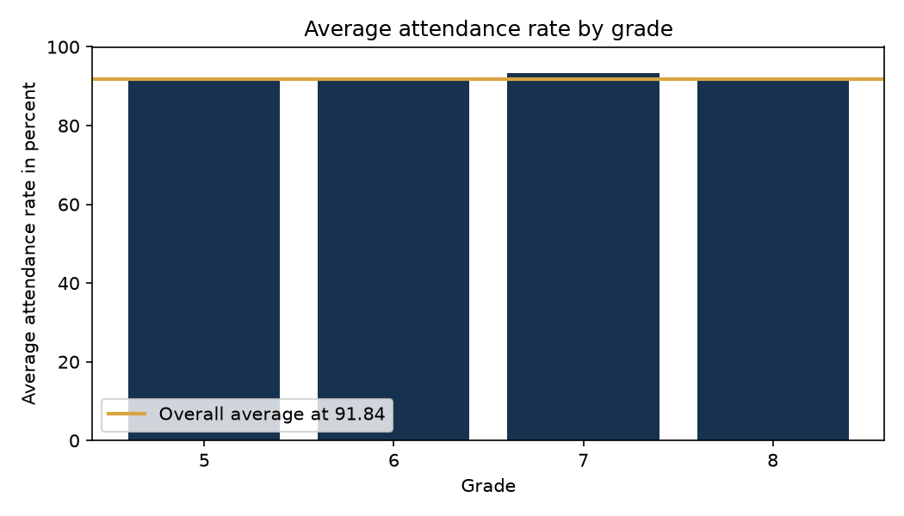
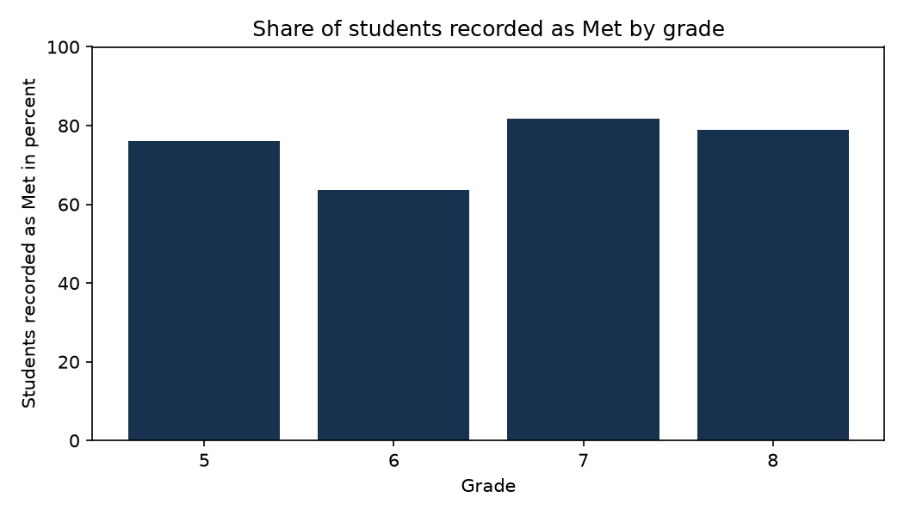
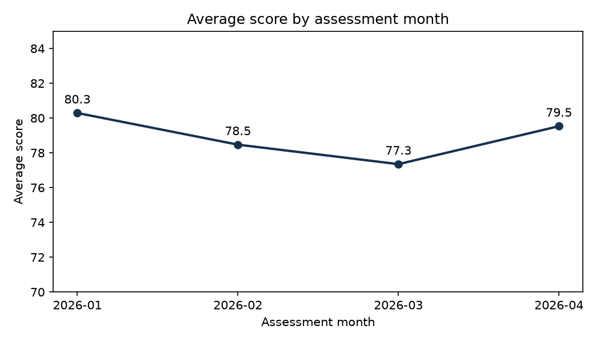
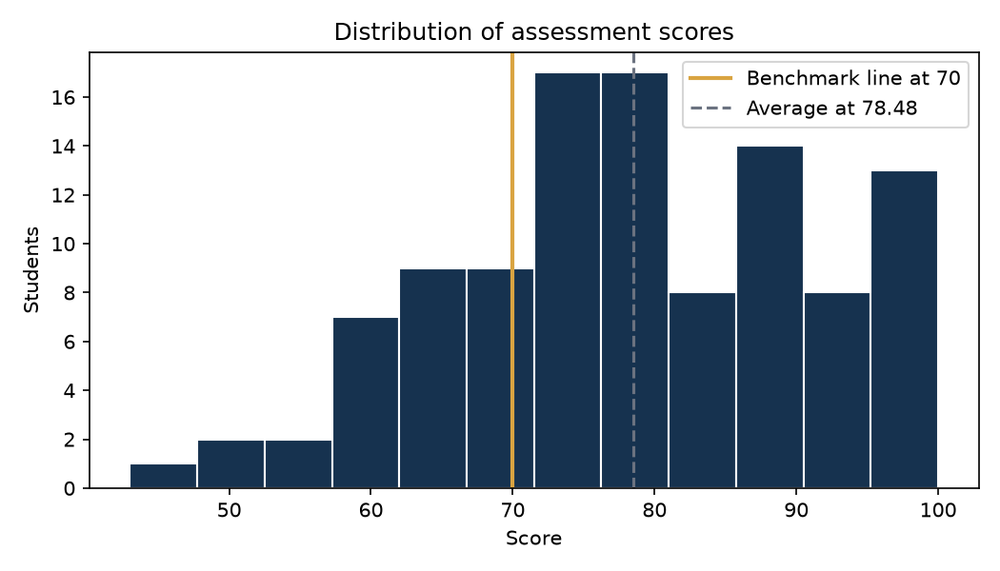
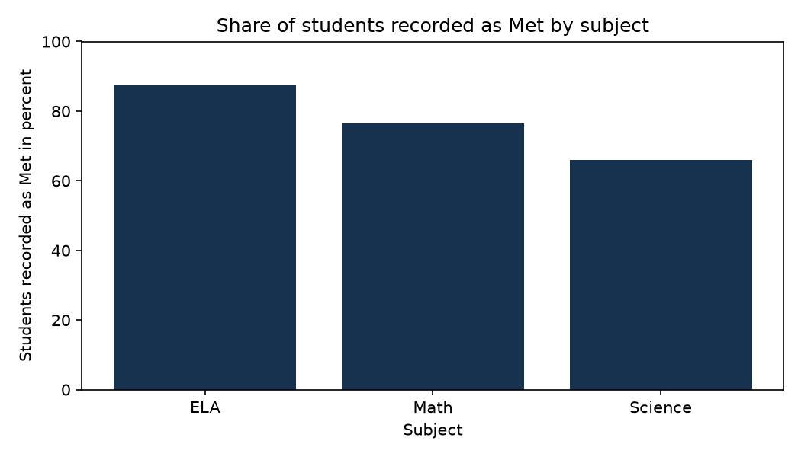
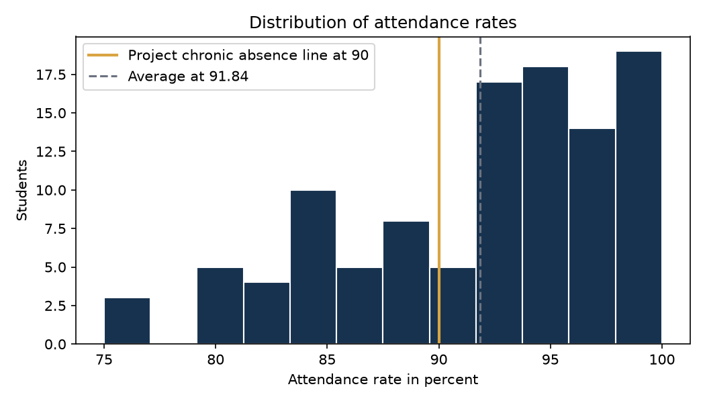
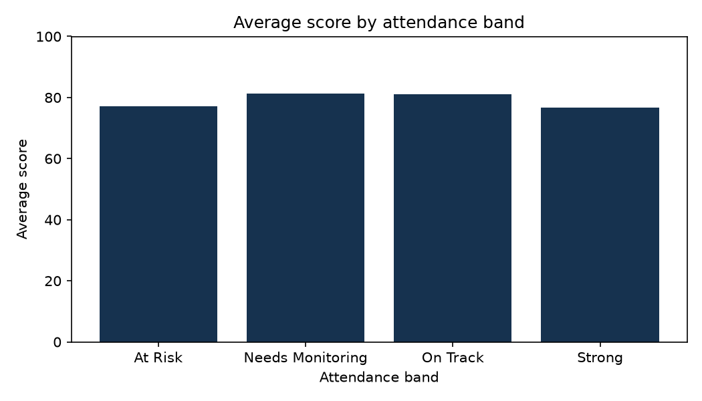
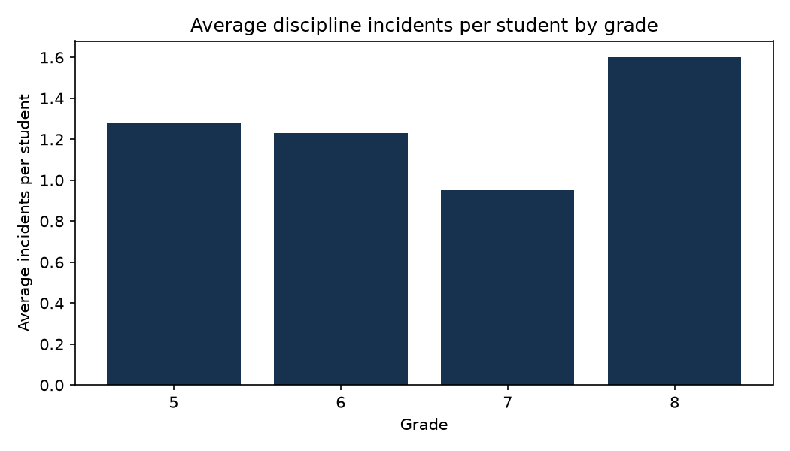

Page 1: Executive Summary

Grade 7 records the highest average attendance at 93.25 percent. The other grades sit between 91.36 and 91.85.

Grade 6 records the lowest share at Met with 63.6 percent, against 81.8 percent in grade 7.

Average scores stay in a narrow range across the January to April testing window. Each student appears once, so this describes the window rather than growth.
Page 2: Student Performance

Scores run from 43 to 100 with a median of 78. A quarter of assessed students score at or below the benchmark line of 70.

ELA records 87.5 percent at Met, Math 76.5 percent, and Science 65.9 percent. Each student took one assessment in one subject, so these rows compare different groups of students.
Page 3: Attendance

Most students cluster above 90 percent, with a smaller group spread down to 75 percent.

Average score does not climb with attendance band in this data. The Strong band averages 76.60 while Needs Monitoring averages 81.27.
The bands and the chronic absence line are project definitions written for this analysis. They are not official school or district thresholds.
Page 4: Equity and Program
| Program | Students | Average attendance rate | Chronic absence rate | Average score | Percent Met |
|---|---|---|---|---|---|
| Core | 55 | 93.14 | 20.0% | 78.96 | 76.4% |
| MTSS Tier 1 | 28 | 90.08 | 50.0% | 74.93 | 60.7% |
| MTSS Tier 2 | 18 | 90.72 | 44.4% | 80.06 | 83.3% |
| MTSS Tier 3 | 9 | 91.16 | 44.4% | 83.67 | 77.8% |

Grade 8 records 1.60 incidents per student, the highest rate. Grade 8 is also the largest grade, so the per student rate is the fair comparison.